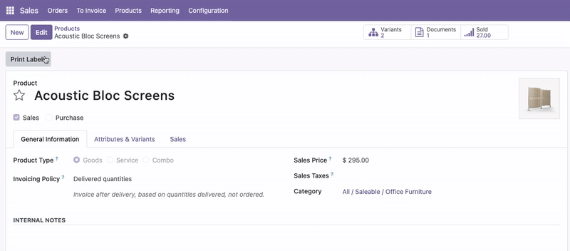

Form View Edit Button Restore
This module restores the classic Edit/Save workflow in Odoo 18 form views
This module restores the classic Edit/Save workflow in Odoo 18 form views.
Form views open in read-only mode by default.
An Edit button is shown; Save and Discard are hidden.

Support
Email:
prt.c.bhatti@gmail.com